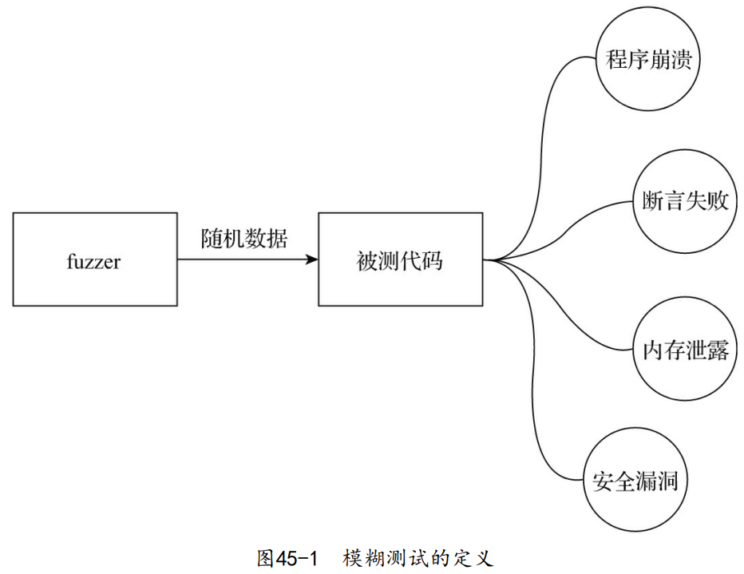

模糊测试：是指半自动或自动地为程序提供非法的、非预期、随机的数据，并监控程序在这些输入数据下是否会出现崩溃、内置断言失败、内存泄露、安全漏洞等情况。

在Go 1.5版本发布的同时，前英特尔黑带级工程师、现谷歌工程师Dmitry Vyukov发布了Go语言模糊测试工具go-fuzz。
传统软件测试一般会针对被测目标的特性进行人工测试设计。在设计一些异常测试用例的时候，测试用例质量好坏往往取决于测试设计人员对被测系统的理解程度及其个人能力。即便测试设计人员个人能力很强，对被测系统也有较深入的理解，他也很难在有限的时间内想到所有可能的异常组合和异常输入，尤其是面对庞大的分布式系统的时候。系统涉及的自身服务组件、中间件、第三方系统等多且复杂，这些系统中的潜在bug或者组合后形成的潜在bug是我们无法预知的。
而 将随机测试、边界测试、试探性攻击等测试技术集于一身的模糊测试 对于上述传统测试技术存在的问题是一个很好的补充和解决方案。
1. 模糊测试在挖掘Go代码的潜在bug中的作用
Dmitry Vyukov使用go-fuzz对当时（2015年）的Go标准库以及其他第三方开源库进行了模糊测试并取得了惊人的战果：
// 60个测试
60 tests
// 在Go标准库中发现137个bug(70个已经修复)
137 bugs in std lib (70 fixed)
// 在其他项目中发现165个bug
165 elsewhere (47 in gccgo, 30 in golang.org/x, 42 in freetype-go, protobuf, http2,
bson)
go-fuzz的战绩在持续扩大，截至本书写作时，列在go-fuzz官方站点上的、由广大Gopher分享出来的已发现bug已有近400个，未分享出来的通过go-fuzz发现的bug估计远远不止这个数量。
2. go-fuzz的初步工作原理
go-fuzz的工作流程如下：
- 生成随机数据；
- 将上述数据作为输入传递给被测程序；
- 观察是否有崩溃记录（crash），如果发现崩溃记录，则说明找到了潜在的bug；
go-fuzz采用的是 代码覆盖率引导的fuzzing算法（Coverage-guided fuzzing）。
go-fuzz运行起来后将进入一个死循环，该循环中的逻辑的伪代码大致如下：
// go-fuzz-build在构建用于go-fuzz的二进制文件(*.zip)的过程中
// 在被测对象代码中埋入用于统计代码覆盖率的桩代码及其他信息
Instrument program for code coverage
Collect initial corpus of inputs // 收集初始输入数据语料(位于工作路径下的corpus目录下)
for {
// 从corpus中读取语料并做随机变化
Randomly mutate an input from the corpus
// 执行Fuzz，收集代码覆盖率数据
Execute and collect coverage
// 如果输入数据提供了新的代码覆盖率，则将该输入数据存入语料库(corpus)
If the input gives new coverage, add it to corpus
}
go-fuzz的核心是 对语料库的输入数据如何进行变化。go-fuzz内部使用两种对语料库的输入数据进行变化的方法：突变（mutation）和改写 （versify）：
- 突变：是一种低级方法，主要是对语料库的字节进行小修改。
- 插入/删除/重复/复制随机范围的随机字节；
- 位翻转；
- 交换2字节；
- 将一个字节设置为随机值；
- 从一个byte/uint16/uint32/uint64中添加/减去；
- 将一个byte/uint16/uint32替换为另一个值；
- 将一个ASCII数字替换为另一个数字；
- 拼接另一个输入；
- 插入其他输入的一部分；
- 插入字符串/整数字面值；
- 替换为字符串/整数字面值；
- 改写：是比较先进的高级方法，它会学习文本的结构，对输入进行简单分析，识别出输入语料数据中各个部分的类型，比如数字、字母数字、列表、引用等，然后针对不同部分运用突变策略。
3. go-fuzz使用方法
3.1. 安装go-fuzz
使用go-fuzz需要安装两个重要工具：go-fuzz-build和go-fuzz。通过标准go get就可以安装它们：
$ go get github.com/dvyukov/go-fuzz/go-fuzz
$ go get github.com/dvyukov/go-fuzz/go-fuzz-build
3.2. 带有模糊测试的项目组织
假设我们要对foo包进行模糊测试，那么其项目组织如下：
github.com/bigwhite/fuzzexamples/foo/fuzztest]$tree
.
├── fuzz1
│ ├── corpus // 存放输入数据语料的目录，在go-fuzz执行之前，可以放入初始语料；
│ ├── fuzz.go // 包含Fuzz函数的源码文件
│ └── gen // 包含手工生成初始语料的main.go代码
│ └── main.go
├── fuzz2
│ ├── corpus
│ ├── fuzz.go
│ └── gen
│ └── main.go
...
而fuzz.go源文件模板如下：
// +build gofuzz
package foo
func Fuzz(data []byte) int {
...
}
go-fuzz-build在构建用于go-fuzz命令输入的二进制文件时，会搜索带有“+build gofuzz”指示符的Go源文件以及其中的Fuzz函数。
3.3. go-fuzz-build
go-fuzz-build会根据Fuzz函数构建一个用于go-fuzz执行的zip包 （PACKAGENAME-fuzz.zip），包里包含了用途不同的三个文件：
- cover.exe：被注入了代码测试覆盖率桩设施的二进制文件。
- sonar.exe：被注入了sonar统计桩设施的二进制文件。
- metadata：包含代码覆盖率统计、sonar的元数据以及一些整型、 字符串字面值。
不过作为使用者，我们不必过于关心它们，点到为止。
3.4. 执行go-fuzz
一旦生成了foo-fuzz.zip，我们就可以执行针对fuzz1的模糊测试。
$cd fuzz1
$go-fuzz -bin=./foo-fuzz.zip -workdir=./
2019/12/08 17:51:48 workers: 4, corpus: 8 (1s ago), crashers: 0, restarts: 1/0, execs: 0 (0/sec), cover: 0, uptime: 3s
2019/12/08 17:51:51 workers: 4, corpus: 9 (2s ago), crashers: 0, restarts: 1/3851, execs: 11553 (1924/sec), cover: 143, uptime: 6s
2019/12/08 17:51:54 workers: 4, corpus: 9 (5s ago), crashers: 0, restarts: 1/3979, execs: 47756 (5305/sec), cover: 143, uptime: 9s
...
- 如果corpus目录中没有初始语料数据，那么go-fuzz也会自行生成相 关数据传递给Fuzz函数，并且采用遗传算法，不断基于corpus中的语料生成新的输入语料。
- go-fuzz作者建议corpus初始时放入的语料越多越好，而且要有足够的多样性，这样基于这些初始语料施展遗传算法，效果才会更佳。
go-fuzz在执行过程中还会将一些新语料持久化成文件放在corpus中，以供下次模糊测试执行时使用。
go-fuzz执行时是一个无限循环，上面的测试需要手动停下来。
- go-fuzz会在指定的workdir中创建另两个目录：crashers和suppressions。
- crashers中存放的是代码崩溃时的相关信息。
- suppressions目录中则保存着崩溃时的栈跟踪信息，方便开发人员快速定位bug。
4. 使用go-fuzz建立模糊测试的示例
（略）
5. 让模糊测试成为“一等公民”
目前Go尚未将模糊测试当成“一 等公民”对待，即还没有在Go工具链上原生支持模糊测试，模糊测试在Go中的应用还仅限于使用第三方的go-fuzz或谷歌开源的gofuzz。
当前的go-fuzz等工具的实现存在一些无法解决的问题，比如：
- go-fuzz模仿Go工具构建逻辑，一旦Go原生工具构建逻辑发生变化，就会导致go-fuzz-build不断损坏；
- go-fuzz-build无法处理cgo，很难实现；
- 目前的代码覆盖率工具（coverage）是通过在源码中插入桩代码实现的，这使其很难与其他构建系统（build system）集成；
- 基于从源码到源码的转换无法处理所有情况，并且转换功能有限，某些代码模式可能会处理不当或导致构建失败；
- 使用从源码到源码转换的方法产生的代码运行很慢。重用需求；
这些问题需要编译器层面的支持，也就是在编译器层面添加支持模糊测试的基础设施（比如代码覆盖率桩的插入）。